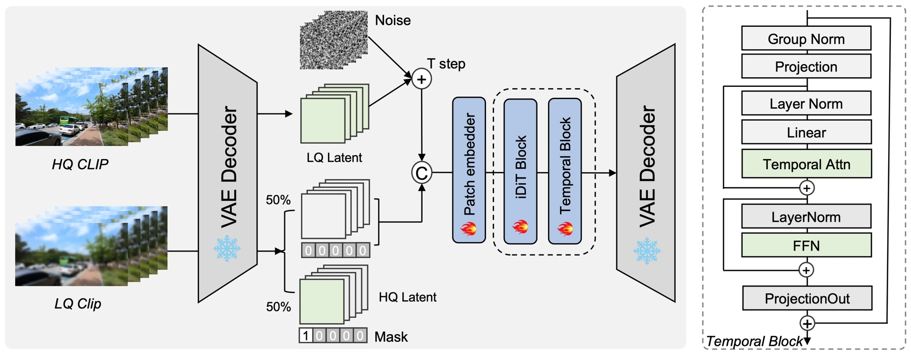
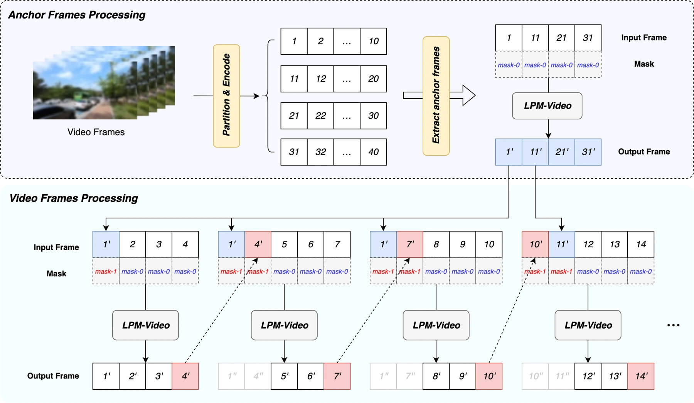

User-generated videos mix noise, blur and compression artifacts. Image diffusion can recover texture but introduces flicker when applied frame by frame; video models must also control cost and prevent drift across long clips.
用户视频常混合噪声、模糊和压缩伪影。图像扩散模型逐帧恢复容易闪烁；视频模型还必须控制成本，并避免长视频中的外观漂移。
The problem changes when the unit of restoration becomes a video rather than a frame. Useful detail must remain stable as objects move, while computation must remain manageable as the clip gets longer.
当复原单元从单帧变为视频，问题也随之改变：物体运动时细节需要保持稳定，视频变长时计算成本也需要可控。
Learning appearance, then aligning time先学习空间细节，再对齐时间
LPM first learns a spatial restoration prior in LPM-Image, then adds temporal alignment and fusion in LPM-Video. A 2D VAE and factorized 2D+1D diffusion transformer reduce processing cost. Temporal-pyramid inference combines long-range guidance and nearby anchor frames to stabilize arbitrary-length video.
LPM 先通过 LPM-Image 学习空间恢复先验，再由 LPM-Video 加入时间对齐与融合。2D VAE 和分解式 2D+1D 扩散 Transformer 降低处理开销，时间金字塔推理结合长程引导和邻近锚帧，稳定恢复任意时长的视频。
A long video creates dependencies at more than one time scale. Nearby frames constrain local motion and texture continuity, while distant keyframes help prevent appearance from gradually drifting. Temporal-pyramid inference organizes those roles explicitly. It uses already-restored information as guidance rather than asking every clip window to invent its own consistent appearance, connecting the spatial model’s detail-generation ability to a controlled long-range inference process.
长视频在多个时间尺度上产生依赖：邻近帧约束局部运动与纹理连续性，较远关键帧则帮助防止外观逐渐漂移。时间金字塔推理明确组织这些作用，利用已恢复的信息作引导，而非让每个窗口独立生成一致外观，从而把空间模型的细节能力连接到受控的长程推理过程。
{kind=link}

Testing quality and temporal behavior同时检验画质与时序表现
The system is evaluated at two levels. Offline comparisons examine restoration quality and temporal behavior against other methods, while production deployment measures viewing experience and bitrate in Kuaishou’s own pipeline. Training progresses from spatial restoration to temporal modeling; long-video inference introduces keyframes and local anchors rather than treating every fixed window as an independent clip. These stages address different sources of instability.
系统从两个层面评估：离线比较恢复质量和时间表现，线上部署则在快手自身流程中衡量观看体验与码率。训练从空间恢复逐步过渡到时间建模；长视频推理引入关键帧和局部锚点，不再把每个固定窗口当作彼此独立的片段。这些阶段分别针对不同来源的不稳定性。
What the video model improves视频模型改善了什么
The report states that restored videos account for about 45% of Kuaishou viewing time. At comparable perceptual quality, its production pipeline reduces bitrate by about 20% relative to the in-house codec. These are platform-specific deployment results; the contribution is the combination of visual quality, temporal stability and serving efficiency.
报告称，处理后视频约占快手总观看时长的 45%；在相近感知质量下，生产系统相对内部编码器降低约 20% 码率。这些是特定平台的部署结果，主要价值在于同时实现视觉质量、时间稳定性与服务效率。
{kind=link}

Keeping long videos coherent at scale规模化处理长视频的一致性
The industrial result depends on a complete system: curated data, staged training, temporal inference and integration with encoding. A sharper single frame is only one part of that objective. The reported platform-scale gains show why visual research and serving engineering must be considered together, while the exact savings should remain tied to the codec, content mix and quality criteria used in deployment.
工业结果依赖完整系统：数据筛选、分阶段训练、时间推理和编码流程集成。单帧更清晰只是目标的一部分。平台规模收益说明视觉研究与服务工程需要共同考虑，而具体节省幅度仍应限定于部署时的编码器、内容分布和质量标准。
Paper & authors论文与作者
Cite this work
@misc{zhu2026lpmindustrialscalegenerativevideo,
title = {LPM: Industrial-Scale Generative Video Restoration},
author = {Bichuan Zhu
and Fulin Li
and Jiachao Gong
and Jinhua Hao
and Kai Zhao
and Kun Yuan
and Pengcheng Xu
and Qiang Wang
and Qiao Mo
and Yanlong Yuan
and Yizhen Shao
and Yuxiao Hu
and Zixi Tuo
and Ming Sun
and Chao Zhou
and Bin Chen
and Bin Yu},
year = {2026},
eprint = {2607.13460},
archivePrefix = {arXiv},
primaryClass = {cs.CV},
url = {https://arxiv.org/abs/2607.13460}
}